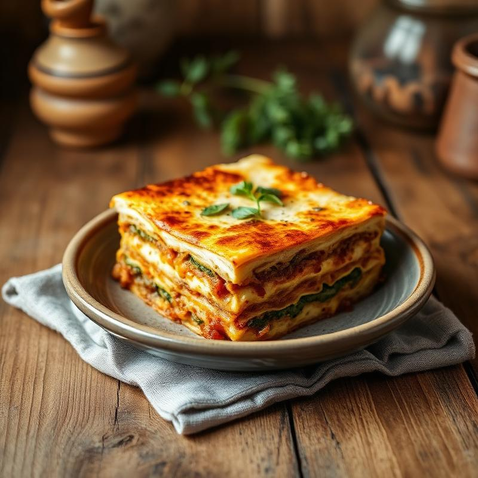
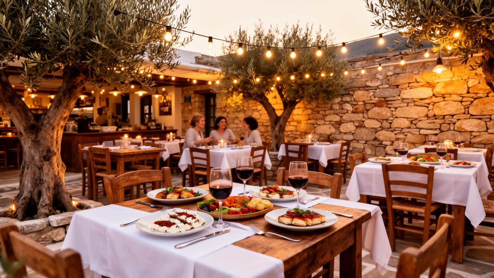
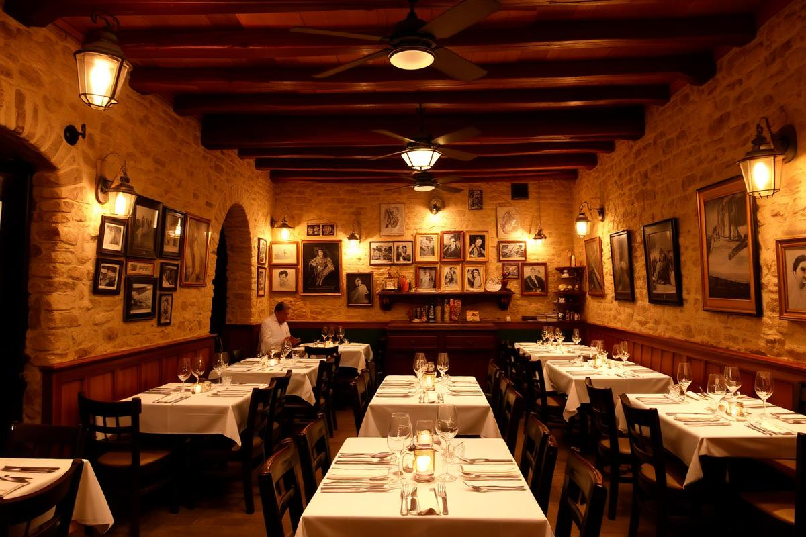
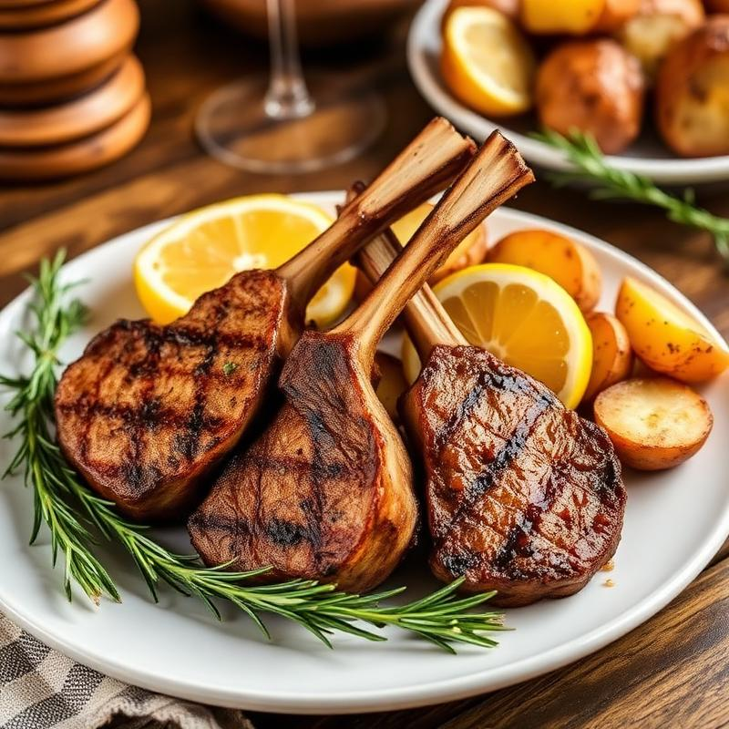
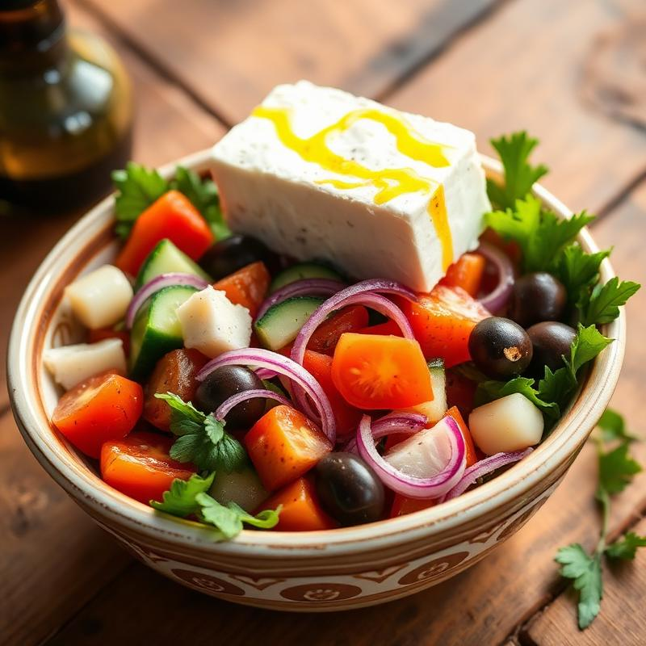
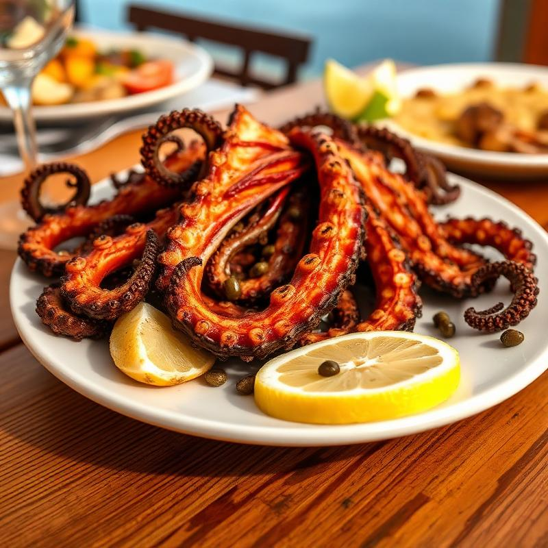
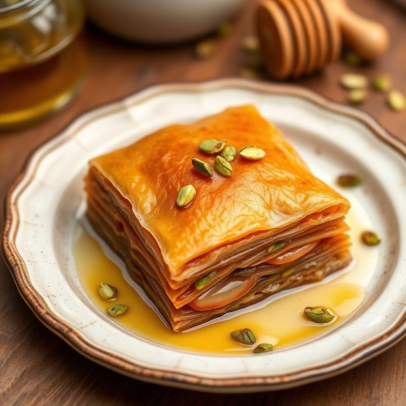

Μουσακάς Σπιτικός
Στρώσεις μελιτζάνας, κιμά μοσχαρίσιου και κρεμώδους μπεσαμέλ, ψημένος στον φούρνο με αγάπη.

Από το 1990
Παραδοσιακές σπιτικές συνταγές, φρέσκα τοπικά υλικά και η ζεστασιά μιας οικογενειακής ταβέρνας που σερβίρει με αγάπη εδώ και τρεις δεκαετίες.
Η Ιστορία μας
Από το 1990, η ταβέρνα «Ο Γιώργος» υποδέχεται κάθε επισκέπτη σαν μέλος της οικογένειάς μας. Με σεβασμό στην παράδοση και αγάπη για τη γνήσια ελληνική κουζίνα, σερβίρουμε πιάτα που θυμίζουν σπίτι.
Φρέσκα υλικά από τοπικούς παραγωγούς, συνταγές που περνούν από γενιά σε γενιά και μια ατμόσφαιρα που σε κάνει να νιώθεις ότι ανήκεις εδώ.
Μάθετε Περισσότερα
Οι Γεύσεις μας
Μερικά από τα πιάτα που αγαπούν οι επισκέπτες μας εδώ και χρόνια – μαγειρεμένα κάθε μέρα με φρέσκα υλικά.

Στρώσεις μελιτζάνας, κιμά μοσχαρίσιου και κρεμώδους μπεσαμέλ, ψημένος στον φούρνο με αγάπη.

Ζουμερά αρνίσια παϊδάκια ψημένα στα κάρβουνα με λεμόνι, ρίγανη και φρέσκο δεντρολίβανο.

Ντομάτα, αγγούρι, πιπεριά, κρεμμύδι, ελιές Καλαμάτας και χοντρό κομμάτι φέτας με εξαιρετικό παρθένο ελαιόλαδο.

Τρυφερό χταπόδι ψημένο αργά στα κάρβουνα, σερβιρισμένο με λαδολέμονο και κάπαρη.
Γιατί Εμάς
Συνταγές τριών γενεών, μαγειρεμένες με τον ίδιο τρόπο που μας δίδαξαν οι γιαγιάδες μας.
Προμηθευόμαστε καθημερινά από τοπικούς παραγωγούς — λαχανικά, κρέατα, ψάρια και τυριά.
Κάθε επισκέπτης γίνεται μέλος της οικογένειάς μας. Αυτό πιστεύουμε από το 1990.
Πάνω από τρεις δεκαετίες εμπειρίας στην αυθεντική ελληνική κουζίνα και φιλοξενία.
Κλείστε Τραπέζι
Κρατήστε ένα τραπέζι και απολαύστε αυθεντικές ελληνικές γεύσεις σε μια ζεστή, παραδοσιακή ατμόσφαιρα. Σας περιμένουμε!
Κριτικές
★★★★★
"Η καλύτερη ταβέρνα στην περιοχή! Ο μουσακάς θυμίζει σπίτι και η φιλοξενία είναι πάντα εξαιρετική. Ερχόμαστε κάθε Σαββατοκύριακο."
★★★★★
"Φανταστικά παϊδάκια, φρέσκα ψάρια και ανεπανάληπτη ατμόσφαιρα. Αξίζει κάθε ευρώ. Σίγουρα η πιο αυθεντική ελληνική εμπειρία."
★★★★★
"We discovered this gem during our trip to Greece and it was the highlight of our vacation. Authentic food, warm people, beautiful setting. A must-visit!"
Βρείτε μας
Διεύθυνση: Οδός Παραδείγματος 42, [Πόλη/Περιοχή], Ελλάδα
Τηλέφωνο: +30 210 1234567
Email: info@taverna-giorgos.gr
Ωράριο: Δευτέρα – Κυριακή: 12:00 – 00:00
Από το 1990
Η ιστορία της ταβέρνας «Ο Γιώργος» ξεκινά το 1990, όταν ο Γιώργος και η Ελένη άνοιξαν ένα μικρό μαγαζί στην καρδιά της [Πόλη/Περιοχή] με ένα απλό όραμα: να σερβίρουν φαγητό όπως στο σπίτι τους.
Με συνταγές που κληρονόμησαν από τις μητέρες και τις γιαγιάδες τους, ξεκίνησαν να μαγειρεύουν πιάτα γεμάτα αγάπη, μνήμες και γνήσια ελληνική γεύση. Σύντομα, η ταβέρνα έγινε σημείο αναφοράς στην περιοχή.
Σήμερα, η δεύτερη γενιά συνεχίζει με τον ίδιο ζήλο. Τα παιδιά του Γιώργου μεγάλωσαν μέσα στην κουζίνα, έμαθαν τα μυστικά κάθε συνταγής και σέβονται βαθιά την παράδοση που κληρονόμησαν.
Κάθε μέρα, προμηθευόμαστε φρέσκα υλικά από τοπικούς παραγωγούς — λαχανικά από κήπους της περιοχής, κρέατα από κτηνοτρόφους που γνωρίζουμε προσωπικά, ψάρια φρεσκοψαρεμένα και τυριά από τοπικά τυροκομεία.
Πιστεύουμε ότι το καλό φαγητό δεν χρειάζεται πολυπλοκότητα. Χρειάζεται σεβασμό στα υλικά, υπομονή στη μαγειρική και χαρά στη φιλοξενία. Αυτός είναι ο τρόπος μας.
Σας περιμένουμε να μοιραστούμε μαζί σας ένα τραπέζι γεμάτο γεύσεις, χρώματα και αρώματα — ακριβώς όπως θα κάναμε στο δικό μας σπίτι.
Στιγμιότυπα
Εικόνες από τον χώρο μας, τα πιάτα μας και τις στιγμές που μοιραζόμαστε με τους επισκέπτες μας.

Επικοινωνήστε μαζί μας
Κλείστε τραπέζι τηλεφωνικά ή στείλτε μας μήνυμα. Σας περιμένουμε!
Διεύθυνση: Οδός Παραδείγματος 42, [Πόλη/Περιοχή], Ελλάδα
Τηλέφωνο Κράτησης: +30 210 1234567
Email: info@taverna-giorgos.gr
Ωράριο Λειτουργίας: Δευτέρα – Κυριακή: 12:00 – 00:00